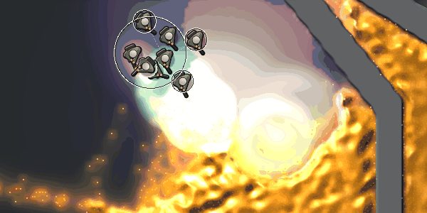
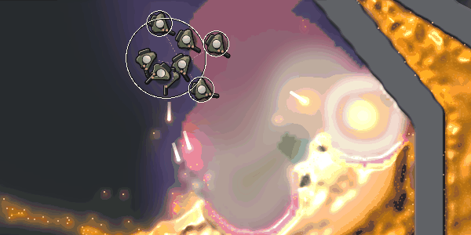
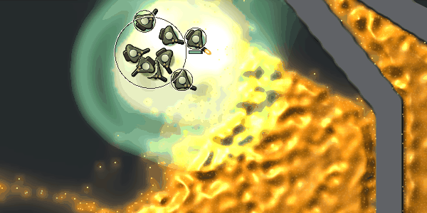
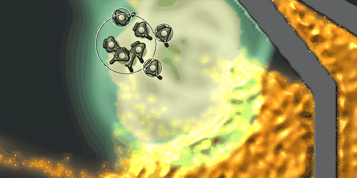
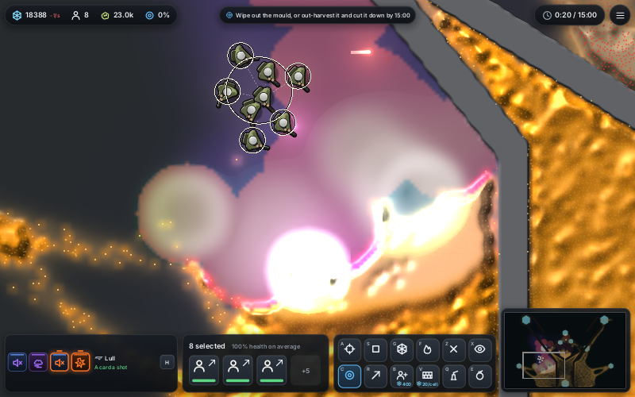

<title>Guns Without Recharge</title>
<meta name="claude:viewport-fit-sides" content="cover">
<link rel="stylesheet" href="https://fonts.googleapis.com/css2?family=Space+Grotesk:wght@500;700&family=Inter:wght@400;600&display=swap">
<style>
/* Layout: one column; the four kinds as a stat table, then each kind's film with its counts. */
:root { --bg:#f2f3ef; --fg:#1c2023; --muted:#5b6366; --panel:#ffffff; --line:#d7d9d1; --accent:#5d7f3a;
  --display:"Space Grotesk",system-ui,sans-serif; --body:"Inter",system-ui,sans-serif; }
@media (prefers-color-scheme: dark) { :root:not([data-theme="light"]) { --bg:#121516; --fg:#e6e9e5; --muted:#99a2a2; --panel:#1a1e20; --line:#2b3134; --accent:#a3c97a; color-scheme:dark } }
:root[data-theme="dark"] { --bg:#121516; --fg:#e6e9e5; --muted:#99a2a2; --panel:#1a1e20; --line:#2b3134; --accent:#a3c97a; color-scheme:dark }
body { background:var(--bg); color:var(--fg); font-family:var(--body); line-height:1.55; }
main { max-width:860px; margin:0 auto; padding-block:32px 48px; padding-left:max(16px, env(safe-area-inset-left, 0px)); padding-right:max(16px, env(safe-area-inset-right, 0px)); display:grid; gap:28px; }
h1, h2 { font-family:var(--display); text-wrap:balance; margin:0; }
h1 { font-size:2rem; } h2 { font-size:1.25rem; }
p { margin:0; max-width:65ch; }
.muted { color:var(--muted); }
section { display:grid; gap:12px; min-width:0; }
figure { margin:0; background:var(--panel); border:1px solid var(--line); border-radius:6px; overflow:hidden; }
figure img { display:block; width:100%; }
figcaption { padding:12px 14px; display:flex; flex-wrap:wrap; gap:6px 14px; align-items:baseline; }
.tag { font-family:var(--display); font-weight:700; color:var(--accent); }
.counts { font-variant-numeric:tabular-nums; color:var(--muted); }
.wrap { overflow-x:auto; }
table { border-collapse:collapse; font-variant-numeric:tabular-nums; width:100%; }
th, td { text-align:left; padding:6px 10px; border-bottom:1px solid var(--line); vertical-align:top; }
th { font-weight:600; }
td.num, th.num { text-align:right; }
</style>
<main>
  <header style="display:grid;gap:8px">
    <h1>Guns Without Recharge</h1>
    <p class="muted">Larder World, 14 November. A gun no longer stops to recharge. Every shot fires the next card in turn, at the gun's own rate of fire, and firing costs no bank: the bank only builds the gun. Films are from the Fork map, seed 1, with eight soldiers holding the front from 0:19 to 0:22. Each pair is the same scene on the old build and the new one.</p>
  </header>

  <section>
    <h2>What changed</h2>
    <p>Before, a gun fired its cards on hits, then recharged for a few seconds (2 s, plus 1 s a payload and 0.5 s for most other cards) and shot plain bullets until it was ready. Each payload hit also took bank: 60 for a blast, 150 for gas. Now each shot carries the next card, so a gas and blast gun fires gas, blast, gas, blast for as long as it fires, and each bullet flies in its own card's colour. A scattergun's whole fan carries the same card.</p>
    <p>Both halves of a split now keep a copy of the gun and its cards. Gun stats come straight from a normal curve, so most rolls land near average and big swings are rare, and no gun is labelled lucky.</p>
  </section>

  <section>
    <h2>Rifles on gas and blast in turn</h2>
    <figure><figcaption><span class="tag">Before</span><span class="counts">2,143 killed · 121 shots · bank 20,000 to 14,387</span></figcaption></figure>
    <figure><figcaption><span class="tag">After</span><span class="counts">2,816 killed · 124 shots · bank 20,000 to 18,386</span></figcaption></figure>
  </section>

  <section>
    <h2>Scattergun on blast</h2>
    <figure><figcaption><span class="tag">Before</span><span class="counts">1,166 killed · 316 bullets · bank 20,000 to 16,001</span></figcaption></figure>
    <figure><figcaption><span class="tag">After</span><span class="counts">1,734 killed · 300 bullets · bank 20,000 to 18,134</span></figcaption></figure>
  </section>

  <section>
    <h2>The loadout strip</h2>
    <figure><figcaption><span class="tag">After, 0:20</span><span class="counts">The strip lights the card the next shot fires and reads "A card a shot"; the recharge bar is gone</span></figcaption></figure>
  </section>

  <p class="muted">Counts are from one seed at a close front, so read them as a tuning note. The bank falls a little in the new films too; that is the game's other spending, not the gun. Rendered on the cloud's software GPU. Next come rolled bullets: damage plus speed, range and spread multipliers, with plain, blast, bomb, gas and germ as bullets.</p>
</main>
